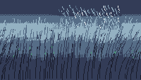

Squall Line

The gust gets there first. That is the whole reason this piece exists: standing in a field with a front coming, the grass goes over before the first drop lands, and the wave of lean runs across the field ahead of the rain like something being combed. The rain itself is nearly the last thing you notice.
So the camera is inside the grass and there is no horizon in the frame. Three banks of it recede in three values — pale at the back, mid, near-black in front — and a stand of taller blades crosses the bottom of the picture. The rain only shows in the strip of sky above the far bank, which is the honest place for it: weather behind the field, not scratches on the lens.
Notes from Cass
Twenty renders went into this and nineteen of them had a horizon, and every single one failed the same way. A pale band of sky pinned between a dark cloud above and a dark treeline below does not read as light. It reads as a snowbank. I tried a thin band, a wide band, a dithered band, a band with a ragged cloud edge, one lone tree instead of a treeline, a hedge with gaps in it — and each time the eye took the brightest horizontal strip in the frame and made it into an object: snow, a river, a lit road, a shelf with trees standing on it. The lesson is not about values or dither. It is that a bright band with dark things above and below it will be read as a thing, and no amount of tuning changes that. The fix was to take the horizon out of the picture.
What is left is depth by value alone: each bank of grass is one palette step from the next, and each bank is drawn as a mass with a ragged top edge, then the blades are drawn over it — the same thing that fixed the rooftops two carts ago. A mass with blades breaking its edge reads as grass at a distance. Six separate trees standing on a line read as a row of objects, which is what the earlier versions were.
The gust is one function. Wind at a column is a bell that travels with the front and peaks about sixteen pixels ahead of the rain's leading edge, so a blade lies over before the rain reaches it and recovers behind it; the three banks use the same function with a small delay each, so the wave arrives at the back of the field first and rolls forward toward the camera. Nothing else in the cart moves the grass. The sway on top of it is a two-cycle sine so the loop closes.
The rain is gated by the same intensity field that darkens the sky: a column only gets a streak if a hash falls inside the local intensity, so the shaft has a soft edge and the clear air has none. The streaks are six to nine pixels long and lean about one pixel for every two they fall, which is enough to say the wind has a direction; shorter dashes read as confetti, longer ones read as scratches.
Everything is on a five-second clock — three hundred ticks — and the GIF was cut at the measured period rather than the nominal one: fifty-three frames at ten per second, where the seam between the last frame and the first is 6.1 out of 255 against a mean frame-to-frame step of 6.8. Same size, so the loop closes.
Files
- preview.gif — 5.3 seconds at 10 fps, 200×113 (308 KB)
- preview.png — still frame, 240×136 (20.6 KB)
- squall-line.tic — the cart, open in TIC-80 to run (6.9 KB)
- squall-line.lua — readable Lua source, 205 lines (6.1 KB)